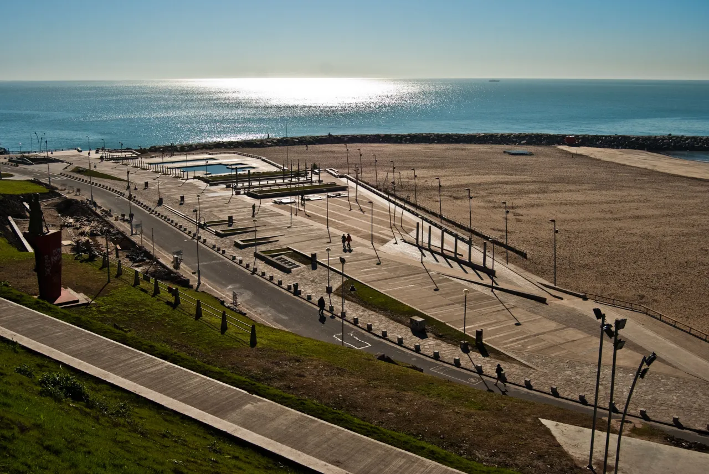
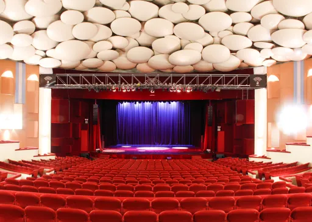
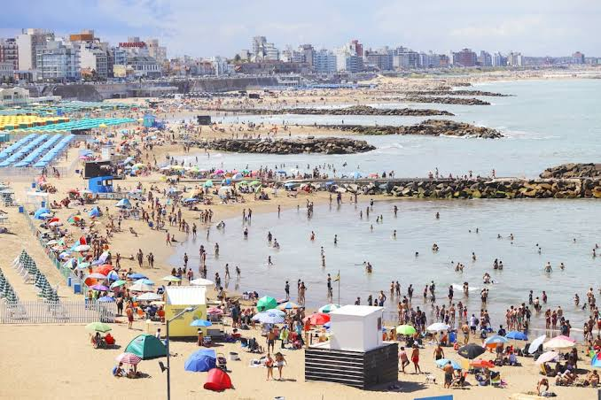
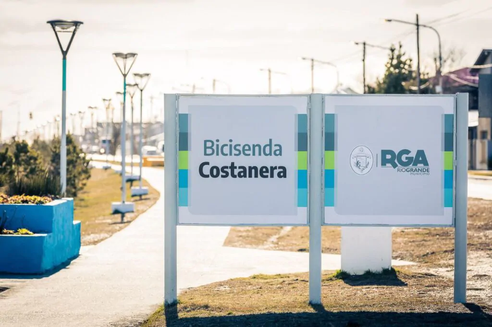

Recomendaciones ante alerta de vientos fuertes
Se recomienda a los turistas revisar el pronóstico del clima antes de realizar actividades al aire libre.
Antes de viajar es importante conocer las últimas novedades de la ciudad: eventos, cambios climáticos, cortes de calles o actividades especiales de temporada. Aquí reunimos las noticias más relevantes para que tu visita sea la mejor posible. Ir directo a las noticias

Se recomienda a los turistas revisar el pronóstico del clima antes de realizar actividades al aire libre.

Se anunciaron nuevas fechas de recitales y obras de teatro. Consultá cómo conseguir entradas.

La ciudad se prepara para recibir a miles de turistas con nuevas propuestas gastronómicas y culturales a lo largo de toda la costa.

El municipio inauguró un nuevo tramo de bicisendas que conecta el centro con los balnearios del sur, ideal para recorrer la ciudad de forma sustentable.